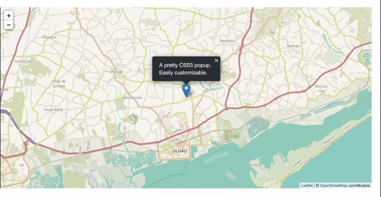

Weather Data in IloIlo Science and Technology BNC Campus.
Hey! Steven , this is the current weather about our university.
ISAT U BNC Map
Steven, get access in your current location and know your distance from ISAT university (BNC) campus.
